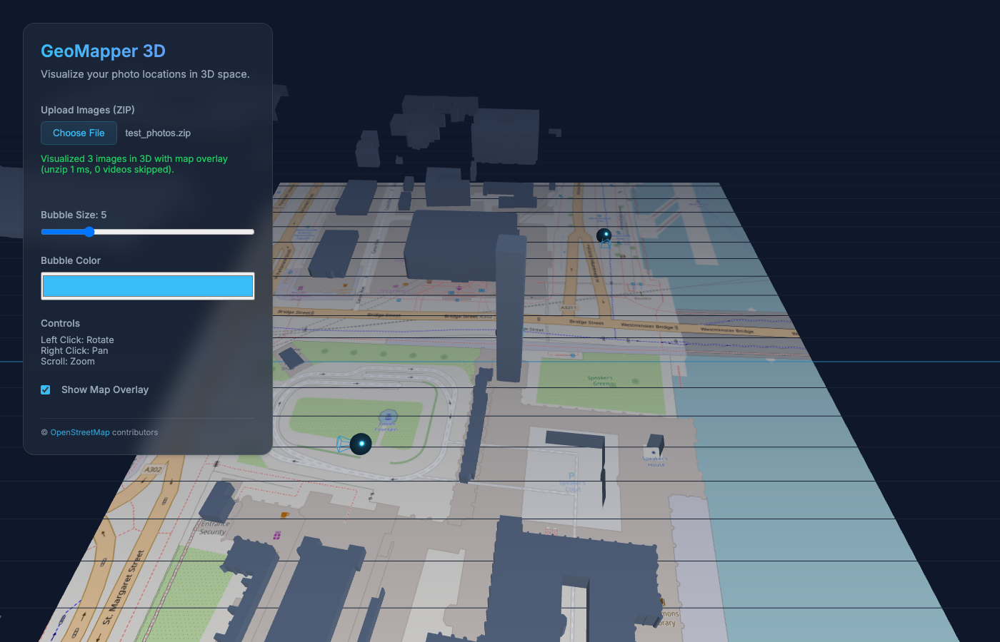

Operations Manager · Survey Air
Jem Karaceylan
I run drone survey operations at Survey Air in Surrey, and build the software that delivers the data. Two days a week I plan and fly the missions; the rest of the week is client portals, pipelines and automation.
- Base
- Farnham, Surrey
- Licence
- GVC · CAA
- Degree
- BSc Aerospace, Swansea
Currently building the client portal and the automation around it. Open to operations roles where the person running the job also builds the tooling.

Selected work
Four projects, then a few smaller ones.
Client portal
A Next.js portal that replaced a WordPress site and an FTP folder.
- Google SSO and role-based project access.
- Browser-to-S3 multipart uploads; the app server never touches the file data.
- Scheduled storage moves from S3 Standard to Infrequent Access to Glacier.
The Next.js app handles SSO, roles and presigned URLs. File data never passes through it.
GeoMapper 3D
Drop a ZIP of drone photos into a browser and see them plotted in real-world 3D.
- Altitude becomes height; camera frustums show heading.
- Falls back to a 2D coverage map past 2,000 photos.
- 30,000 points rendered in seconds.
Skills library
One set of procedures, read by three coding agents.
- Shared core plus per-harness frontmatter; a projection script installs them into Claude Code, Codex and Hermes.
- Shell tests gate the projection before it ships.
Agent usage Ninety days to 21 November 2026
- Tokens processed4.99 billion read from cache
- 6.68 billion
- SessionsClaude Code 708 · Codex 656
- 1,364
- Saved by cachingList-price difference on the cached input
- $3,302
F1 wing endplates
Two endplate specifications designed against Formula One regulations.
- Compared through computational and wind-tunnel analysis.
- Self-defined brief; upper second-class honours.
More work
-
2025–
Private
Survey Air tooling
Batch photogrammetry and LiDAR scripts, a DNG to JPEG pipeline, a CLIP image sorter and a point-cloud volume calculator.
-
2026
GitHub ↗
dashboard-v2
A self-hosted command centre for the home lab. Stdlib-only Python API, SQLite metrics history, deploy and rollback scripts, and agents for Linux, macOS, Windows, Proxmox and Docker.
-
2026
GitHub ↗
Discord Math Game
A daily number puzzle for Discord servers. Date-seeded puzzles, five difficulty bands, warm-cold feedback, streaks and per-guild leaderboards.
Skills
The tools I use most, grouped by job.
Build
TypeScript, JavaScript, Python, React, Next.js, Node, Express, Tailwind, Vite
Map
Three.js, Leaflet, MapLibre, OpenStreetMap, Web Mercator, EXIF / GPS, Copernicus DEM, photogrammetry, LiDAR
Operate
Linux, Docker, Caddy, Proxmox, Tailscale, SQLite, Postgres, Drizzle, S3, Google Cloud, Gemini, OAuth, NextAuth, REST
Fly
GVC · CAA, mission planning, airspace and compliance, glider pilot, SolidWorks, AutoCAD, MATLAB, FEA / CFD, wind tunnel
Experience
Roles, degree and flying.
-
2025–
Operations Manager, Survey Air
Run day-to-day delivery at a small drone survey company: flight operations, client communication, compliance, and the internal systems that connect them.
-
2025–
Independent software
GeoMapper 3D, dashboard-v2, Discord Math Game and a skills library, built outside work.
-
2019
BSc (Hons) Aerospace Engineering, Swansea University
Upper second-class honours. Dissertation on Formula One wing endplates, tested in CFD and a wind tunnel.
-
Ongoing
Flight
GVC remote pilot licence (CAA) and about 30 hours in civilian gliders. The best way to understand airspace is to be in it.